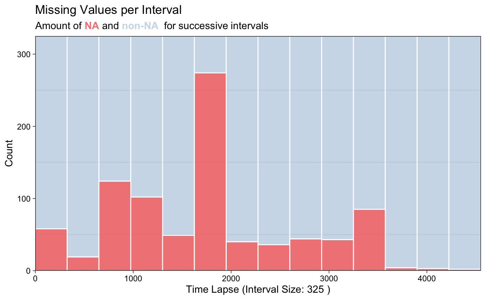
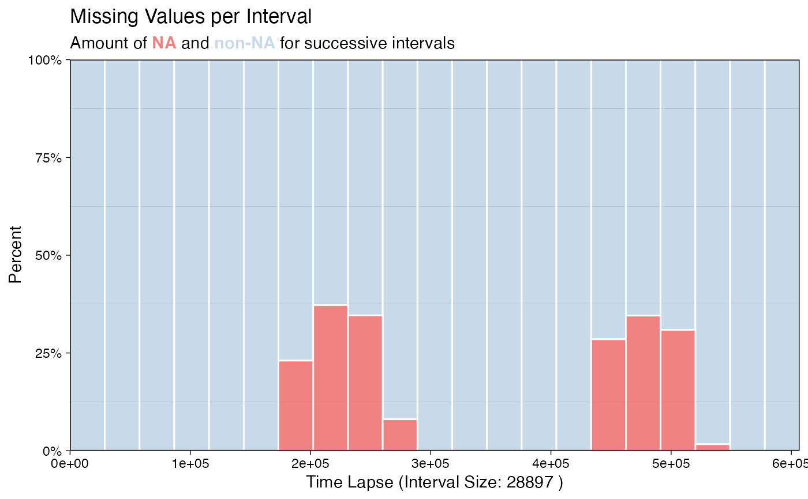
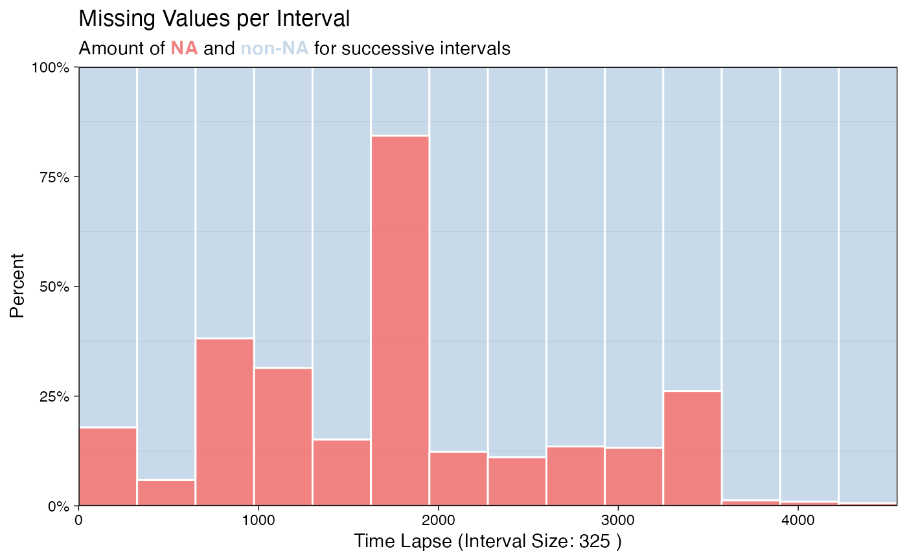
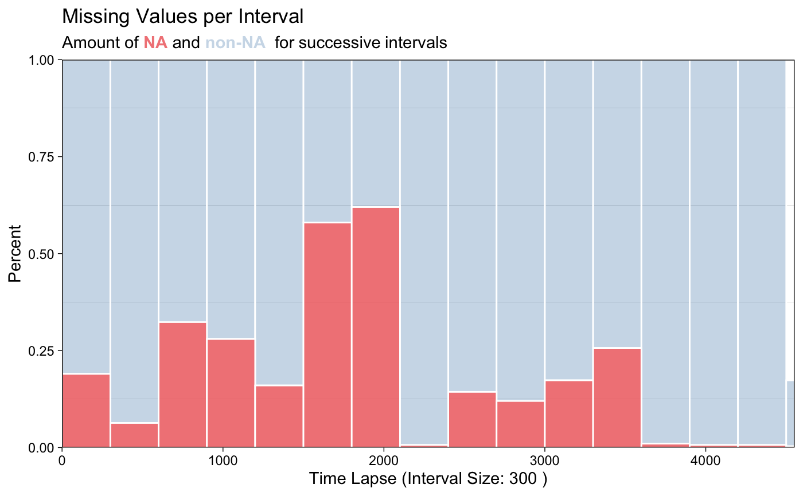
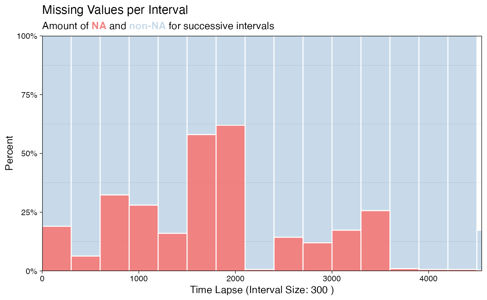
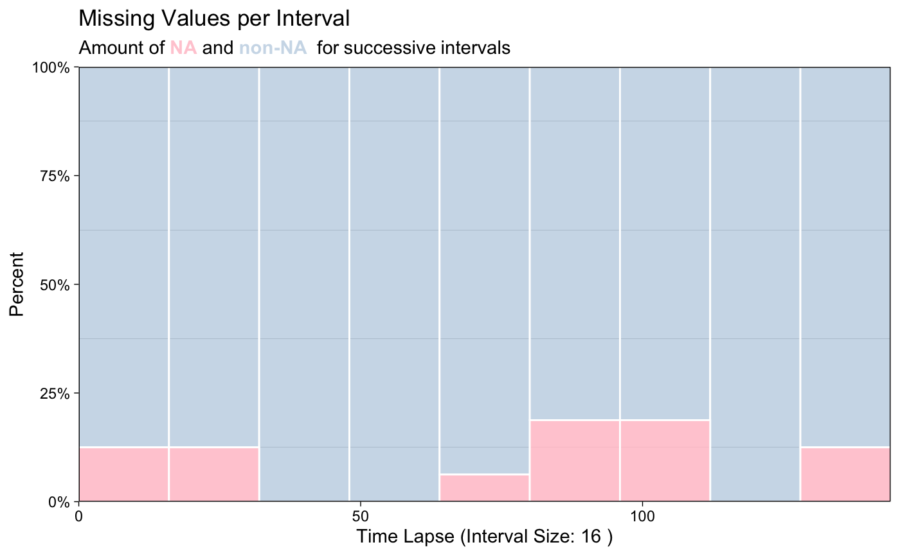
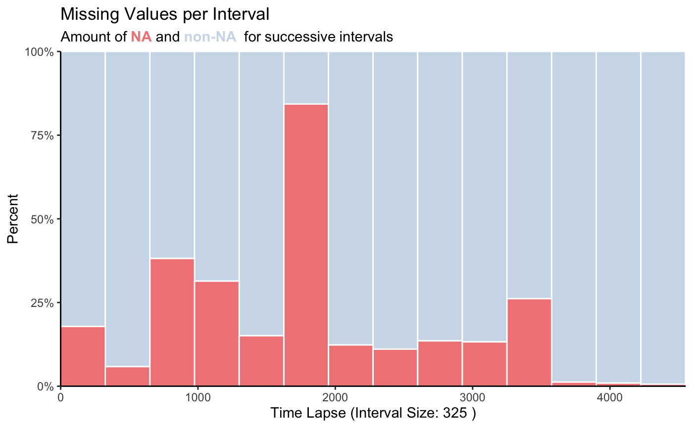
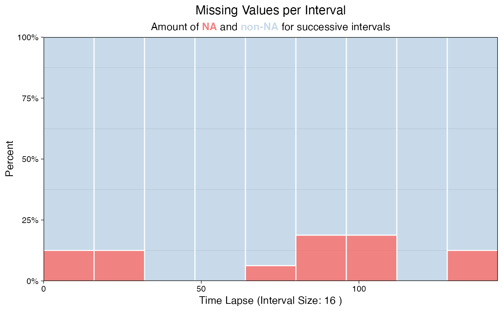
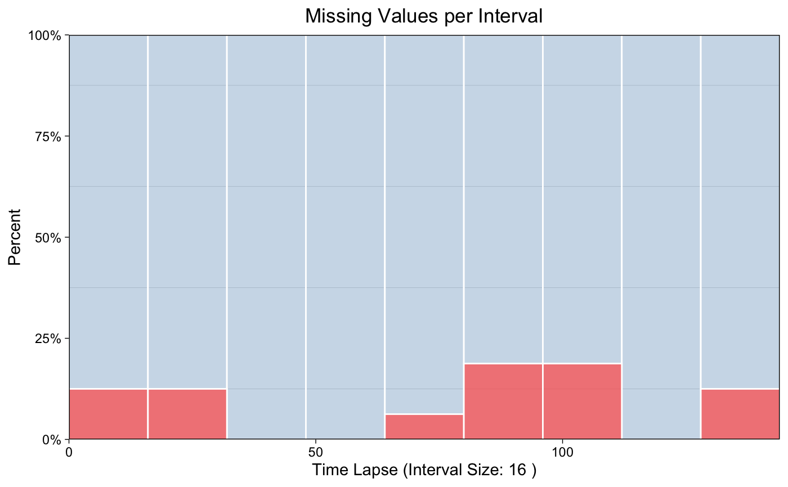

Visualization of missing values in barplot form. Especially useful when looking at specific intervals and for time series with a lot of observations.
ggplot_na_intervals( x, number_intervals = NULL, interval_size = NULL, measure = "percent", color_missing = "indianred2", color_existing = "steelblue", alpha_missing = 0.8, alpha_existing = 0.3, title = "Missing Values per Interval", subtitle = "Amount of NA and non-NA for successive intervals", xlab = "Time Lapse (Interval Size: XX)", ylab = NULL, color_border = "white", theme = ggplot2::theme_linedraw() )
| x | Numeric Vector ( |
|---|---|
| number_intervals | Defines the number of bins to be created. Default
number of intervals (denoted by NULL) is calculated by |
| interval_size | Defines how many observations should be in one bin/interval. The required number of overall bins is afterwards calculated automatically. If used this parameter overwrites the number_intervals parameter. For a very long time series be sure to make the interval_size not extremely small, otherwise because of overplotting issues nothing can be seen until you also increase the plot width. |
| measure | Whether the NA / non-NA ratio should be given as percent or absolute numbers.
|
| color_missing | Color for the amount of missing values. |
| color_existing | Color for the amount of existing values. |
| alpha_missing | Alpha (transparency) value for the missing values. |
| alpha_existing | Alpha (transparency) value for the existing values. |
| title | Title of the Plot (NULL for deactivating title). |
| subtitle | Subtitle of the Plot (NULL for deactivating subtitle). |
| xlab | Label for x-Axis. Automatically set to the current interval size, if no custom text is chosen. |
| ylab | Label for y-Axis. As default (NULL), the axis is automatically set
to either 'Percent' or 'Count' dependent on the settings of parameter |
| color_border | Color for the small borders between the intervals/bins. Default is 'white'. |
| theme | Set a Theme for ggplot2. Default is ggplot2::theme_linedraw().
( |
This function visualizes the distribution of missing values within
a time series. In comparison to the ggplot_na_distribution
function this is not done by plotting each observation of the time series
separately. Instead observations for time intervals are represented as
intervals/bins of multiple values. For these intervals information about
the amount of missing values are shown. This has the advantage, that also
for large time series a plot which is easy to overview can be created.
The only really needed parameter for this function is x (the univariate time series that shall be visualized). All other parameters are solely for altering the appearance of the plot.
As long as the input is univariate and numeric the function also takes data.frame, tibble, tsibble, zoo, xts as an input.
The plot can be adjusted to your needs via the function parameters. Additionally for more complex adjustments, the output can also be adjusted via ggplot2 syntax. This is possible, since the output of the function is a ggplot2 object. Also take a look at the Examples to see how adjustments are made.
# Example 1: Visualize the missing values in tsNH4 time series ggplot_na_intervals(tsNH4)# Example 2: Visualize the missing values in tsHeating time series ggplot_na_intervals(tsHeating)# Example 3: Same as example 1, just written with pipe operator tsNH4 %>% ggplot_na_intervals()# Example 4: Visualize NAs in tsNH4 - exactly 8 intervals ggplot_na_intervals(tsNH4, number_intervals = 8)# Example 5: Visualize NAs in tsNH4 - 300 observations per interval ggplot_na_intervals(tsNH4, interval_size = 300)# Example 6: Visualize NAs in tsAirgap - different color for NAs # Plot adjustments via ggplot_na_intervals function parameters ggplot_na_intervals(tsAirgap, color_missing = "pink")# Example 7: Visualize NAs in tsNH4 - different theme # Plot adjustments via ggplot_na_intervals function parameters ggplot_na_intervals(tsNH4, theme = ggplot2::theme_classic())# Example 8: Visualize NAs in tsAirgap - title, subtitle in center # Plot adjustments via ggplot2 syntax ggplot_na_intervals(tsAirgap) + ggplot2::theme(plot.title = ggplot2::element_text(hjust = 0.5)) + ggplot2::theme(plot.subtitle = ggtext::element_markdown(hjust = 0.5))# Example 9: Visualize NAs in tsAirgap - title in center, no subtitle # Plot adjustments via ggplot2 syntax and function parameters ggplot_na_intervals(tsAirgap, subtitle = NULL) + ggplot2::theme(plot.title = ggplot2::element_text(hjust = 0.5))# Example 10: Visualize NAs in tsAirgap - x-axis texts with angle # Plot adjustments via ggplot2 syntax and function parameters ggplot_na_intervals(tsAirgap, color_missing = "grey") + ggplot2::theme(axis.text.x = ggplot2::element_text(angle = 60, hjust = 1))